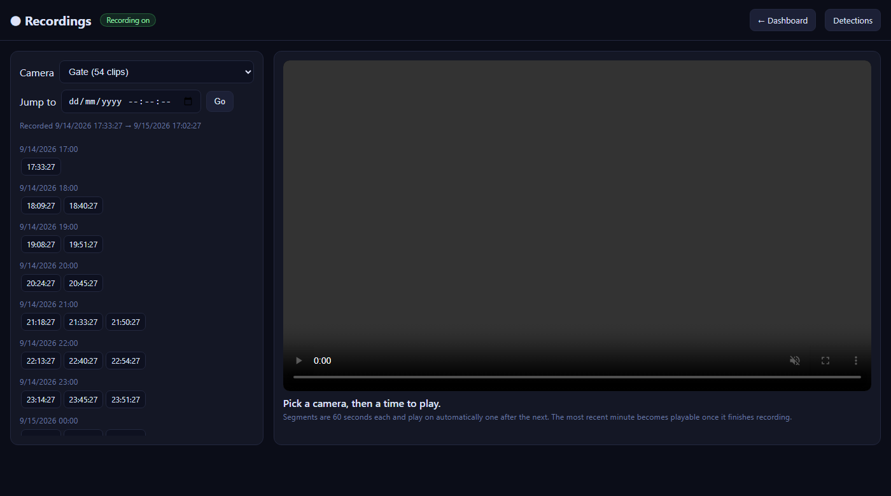
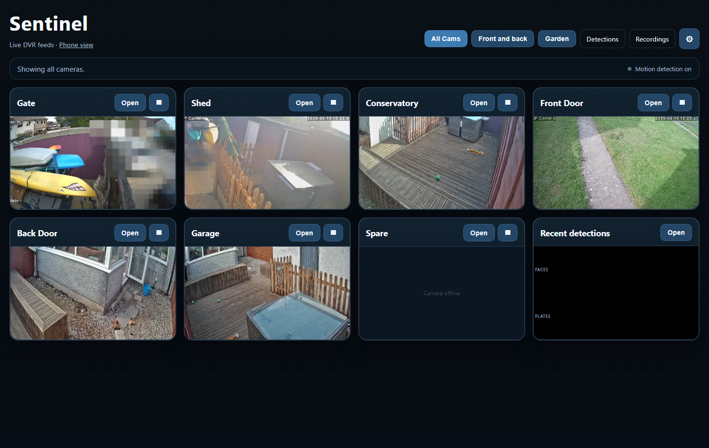
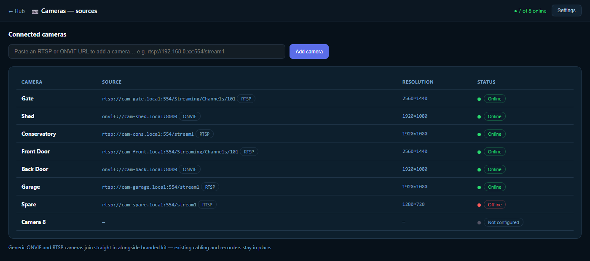
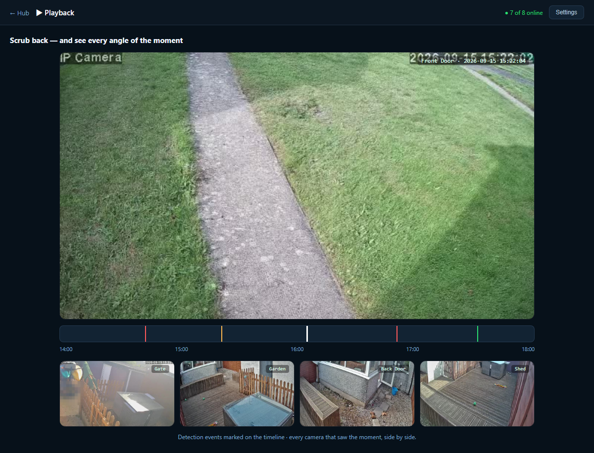
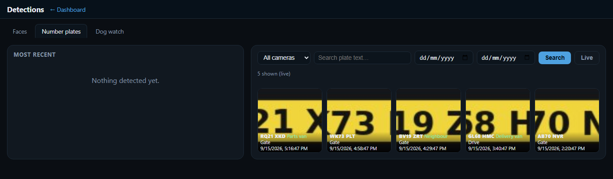
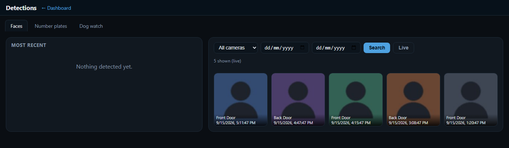
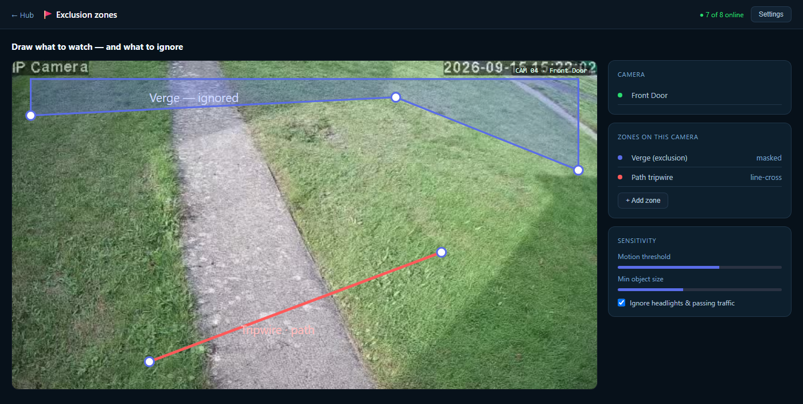

Homes
Know the family car's home before the doorbell goes, be warned when a stranger's at the door, check the drive from your phone. Recorded on a box in the cupboard, not someone's server.
// for households
Keep the cameras and recorders you already have, and add a brain that runs on your own hardware. Footage stays in the building, there's no monthly fee, and one live command centre tells you who's on site the moment they arrive — home, single premises or whole estate.
Most kits quietly rent you your own footage — a monthly fee, a vendor app, video on someone else's cloud. We do the opposite: everything records to a network video recorder in your building, uploaded to no one.
The system records to a native NVR on your own kit, and footage never leaves the premises. Already running more than one recorder — an old DVR in the yard, a newer NVR at the gate? It ingests several at once, so everything lands in one place you control.

The one people ask for most: turn the recorder already on the wall into live dashboards you open from any device — nothing to install per phone.
Already got a Hikvision NVR? Keep it. We put its live feeds on clean web pages you open from any device on your network — phone, tablet, office PC — and securely from off-site where you want it. No Hik-Connect account, no per-camera cloud, no app on every handset.

You don't rip anything out. Generic cameras speak ONVIF and RTSP — so do we — so whatever brand's on the box connects straight in alongside your branded kit.
Point us at an ONVIF device or RTSP stream and it joins the system next to your Hikvision feeds — one platform across a mix of makes and ages. We add the software, not a skip full of old kit.

Everything in one place: a wall of live feeds beside the alarms, recent arrivals and system health, with alerts pushed to your phone. The screen you leave up in the office and the app you check from the sofa.
Argus puts live feeds, current alarms, the arrivals board and system health on one command screen. When a known car arrives, a stranger's seen or a tripwire trips, the alert appears here and on your phone at once — so no one has to be watching for it to be noticed.

When something happens, jump to the moment on the timeline and scrub the recordings back — then bring up every camera that saw it in a synced view. Recorded natively on your own hardware, so the footage is there in full, no cloud service to ask.

Cameras on the drive, gate or yard read plates as vehicles arrive and turn a plate you've saved into a named vehicle and person — so an arrival isn't "a car", it's "the parts van" or "Dad's estate".
Every recognised vehicle lands on a live arrivals board, and the moment a known plate reaches the gate Argus surfaces an "on site" alert. A heads-up before the doorbell at home; a running log of who came and went at a yard.

A camera that shouts at every swaying branch is one you stop trusting. Ours tells a face from mere motion, and a real crossing from the traffic behind — so the alerts you get are worth reading.
Face detection separates a person from a passing shadow, and recognition puts a name to the ones you know. A stranger at the back door reads differently from staff clocking in or family coming home — so you're alerted to the unknown and left in peace for the known.

You draw the exclusion zones yourself — mask off the road, the neighbour's window, the tree that never stops moving — and set tripwires across the paths that matter, like the gate or yard entrance. It reacts to a person walking up the drive, not to headlights sweeping past.

A three-camera house and a multi-gate yard run the same software — the only difference is how many recorders, cameras and sites it's pointed at.
Know the family car's home before the doorbell goes, be warned when a stranger's at the door, check the drive from your phone. Recorded on a box in the cupboard, not someone's server.
A live log of every vehicle through the gate, tripwires on the perimeter, and a wall of feeds in the office. Multi-DVR keeps the old recorders earning their keep.
Several buildings, one command centre. Every site's recorders and arrivals in one Argus view, with alerts routed to whoever needs them.
The through-line of everything we build: private by default, on your hardware, with nothing you can be cut off from.
Recorder, recognition and dashboards all run on a box you own. Footage and plate data stay with you — cancel nothing, renew nothing.
Video never leaves the building unless you open a secure door to it, over your own connection. No third party holds your recordings.
No camera-maker subscription, no per-camera account, nothing you're tied to. Yours to keep.
Clear, documented and yours. We design, build and host it, show you how it runs, and you keep the keys.
Tell us what recorders and cameras you've already got — home, yard or several sites — and we'll show how they come together into live web views, native recording, and plate, face and motion alerts you actually trust. Near Aztec West, Bristol: we design, build and host it, and you own it.
Start a project →